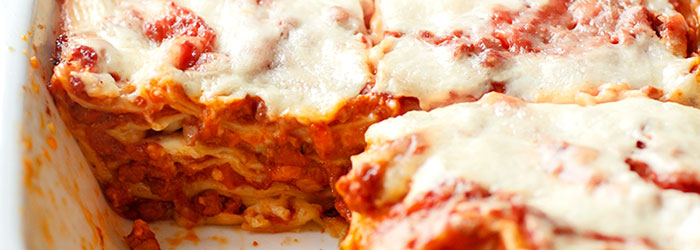

Lasagne Bolognese

Danie z gatunku tych, do których się wraca, mimo sporej pracochłonności wykonania (szczególnie jeśli zagniatamy i wałkujemy własny makaron).
Przekładana sosem bolońskim i beszamelowym, zapiekana z parmezanem lasagne, posmakuje każdemu i sprawdzi się na niemal każdej imprezie :-)
Składniki (6-8 porcji)
- 15 płatów lasagne
- 150 g tartego parmezanu
Sos Boloński
- 3 łyżki oliwy
- 1 cebula
- 2 łodygi selera naciowego
- 1 marchewka
- 150 g boczku wędz. lub gotowanego
- 500 g mielonego mięsa wieprzowo-wołowego
- 1 szklanka białego lub czerwonego wina
- 4 łyżki koncentratu pomidorowego
- 1 szklanka gorącego bulionu
- 400 g passaty pomidorowej
Sos Beszamelowy
- 4 łyżki masła
- 3 łyżki mąki
- 650 ml mleka
- szczypta gałki muszkatołowej
PRZYGOTOWANIE
Sos Boloński
- Na oliwie, w dużym garnku, zeszklić drobno posiekaną cebulę, dodać posiekany w
drobną kosteczkę seler naciowy oraz startą marchewkę
(warzywa można też rozdrobnić w malakserze).
- Obsmażyć, następnie przesunąć na bok i w wolne miejsce włożyć pokrojony w
drobną kosteczkę boczek. Zrumienić i wymieszać z warzywami.
- Przesunąć wszystko na bok garnka i partiami wkładać mięso: włożyć 1/3 część mięsa i obsmażyć
mieszając co chwilę, aż zmieni kolor z czerwonego na brązowy.
Następnie wymieszać z warzywami i boczkiem, przesunąć na bok, powtórzyć z resztą mięsa.
- Wlać wino i gotować na średnim ogniu przez 3 minuty, dodać gorący bulion
wymieszany z koncentratem pomidorowym, zagotować, dodać passatę pomidorową.
- Doprawić solą i pieprzem. Przykryć i gotować na małym ogniu 2 godziny (można dłużej).
Od czasu do czasu zamieszać.
Sos Beszamelowy
- W średnim garnku dobrze rozgrzać masło, dodać mąkę i smażyć przez około 2 minuty ciągle mieszając.
Stopniowo wlewać mleko cały czas energicznie mieszając aż sos będzie gładki.
- Gotować na wolnym ogniu przez kilka minut. Odstawić z ognia, doprawić
solą i gałką muszkatołową.
Pieczenie
- Piekarnik nagrzać do 175 stopni C (grzanie góra-dół bez termoobiegu).
Przygotować żaroodporną formę o wymiarach około 19 x 27 cm. Wysmarować ją masłem,
wlać i rozprowadzić ok. 100 ml sosu beszamelowego,
ułożyć pierwszą warstwę płatów lasagne (mogą nieznacznie na siebie nachodzić).
- Na płatach lasagne rozprowadzić warstwę sosu bolońskiego,
następnie polać sosem beszamelowym i posypać parmezanem.
Powtórzyć jeszcze 4-krotnie.
- Tak złożoną lasagne włożyć do piekarnika i piec 45 minut (w połowie czasu pieczenia
przykryć folią aluminiową).
Po wyjęciu z piekarnika odczekać 5 minut przed porcjowaniem.